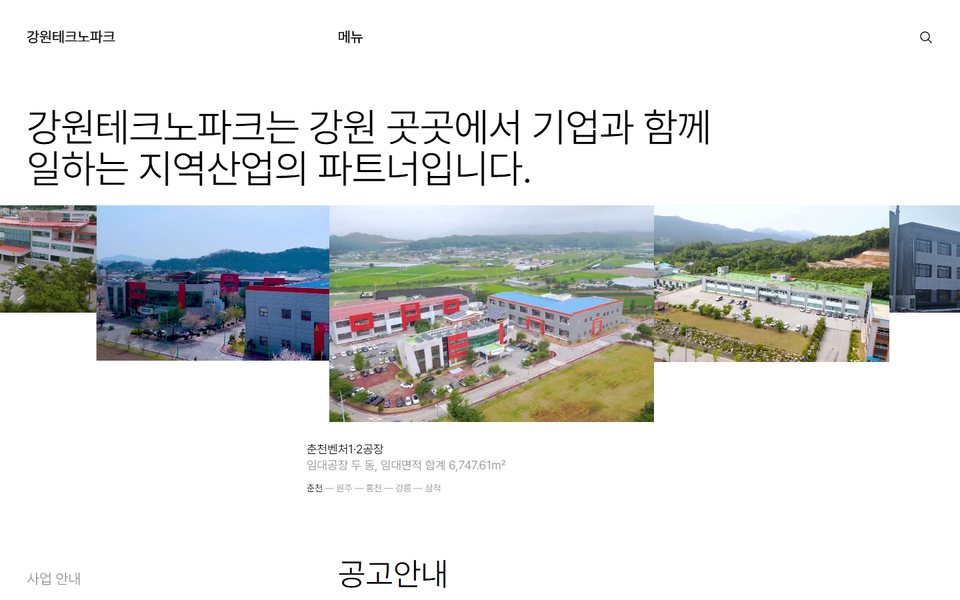
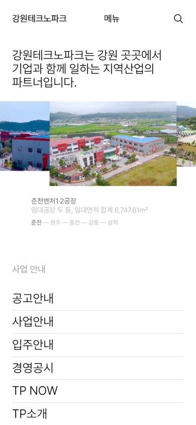

1안 권장
강원 한 바퀴
흰 바탕에 큰 문장 한 줄, 그 아래로 강원테크노파크 단지 항공사진이 이어집니다. 손을 옮기면 서쪽 춘천에서 동쪽 삼척까지 사진이 지나가고, 사진 속 건물이 뒷산보다 빨리 움직여 기차 창밖처럼 입체로 보입니다.


- 손이 닿으면사진 띠가 손 쪽으로 흐르고, 가운데 사진 속 건물이 손을 따라 입체로 움직임
- 내리면사업 안내 · 지금 접수 중인 공고(마감일) · TP NOW · 시설 15곳 목록
- 화면 짜임스뇌헤타(노르웨이 건축사무소) 누리집 첫 화면을 재서 따름